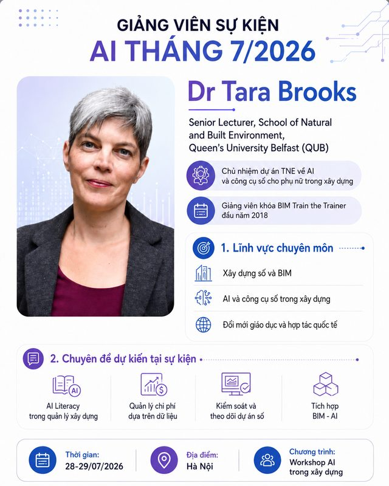
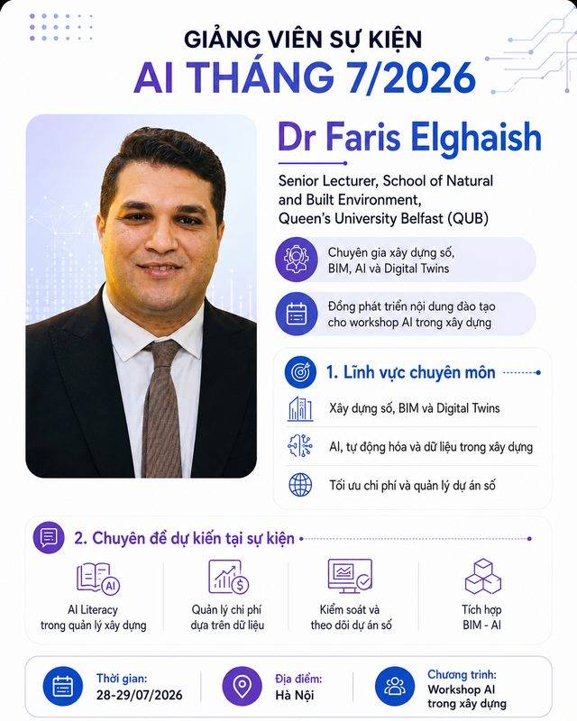
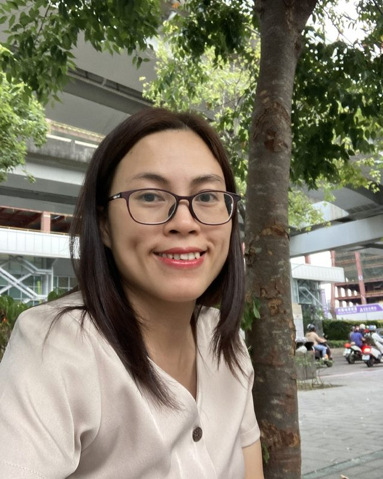

Trưởng dự án phía QUB · Giảng viên khoá tập huấn
TS Tara Brooks
Senior Lecturer · School of Natural and Built Environment · Queen's University Belfast
Đầu mối học thuật và chủ nhiệm dự án phía Vương quốc Anh; tham gia đồng thiết kế chương trình, phát triển nội dung và giảng dạy trong các hoạt động TNE về quản lý xây dựng, BIM và đổi mới giáo dục. Bà cũng chính là giảng viên của khoá BIM train-the-trainer trong hợp tác năm 2018 giữa QUB và các đối tác tại Việt Nam.
- Quản lý xây dựng
- BIM
- TNE & phát triển năng lực
Hồ sơ chính thức tại QUB ↗

Giảng viên chính khoá tập huấn phía QUB
TS Faris Elghaish
Senior Lecturer in Digital Construction · Queen's University Belfast
Chuyên gia xây dựng số với các hướng nghiên cứu và ứng dụng gồm BIM, AI, digital twins, IoT, blockchain, quản lý dự án và tối ưu chi phí; có kinh nghiệm tư vấn và hợp tác công nghiệp. Là người trực tiếp phát triển bộ bài giảng Applied AI in Construction Management dùng cho khoá tập huấn tháng 7/2026.
- Digital Construction
- AI & Digital Twins
- BIM & Project Delivery
Hồ sơ chính thức tại QUB ↗
Điều phối dự án phía Việt Nam
TS Nguyễn Bảo Ngọc
Giảng viên · Khoa Kinh tế và Quản lý Xây dựng · Trường Đại học Xây dựng Hà Nội
Giảng viên thuộc nhóm chuyên môn Quản lý dự án và pháp luật; hướng nghiên cứu gồm quản lý dự án xây dựng, BIM, phân tích mạng lưới xã hội, quan hệ các bên liên quan, phương pháp nghiên cứu hỗn hợp và chuyển đổi số trong xây dựng. Gắn bó với các hoạt động do British Council hỗ trợ từ dự án phát triển nguồn nhân lực BIM năm 2018 (vai trò thư ký khoa học). Trong dự án TNE, thầy là điều phối phía HUCE, cộng tác cùng QUB để bảo đảm chương trình có tính thực tiễn, phù hợp bối cảnh Việt Nam và có khả năng duy trì sau dự án.
- Quản lý dự án
- BIM
- Chuyển đổi số
Hồ sơ chính thức tại HUCE ↗
Cố vấn học thuật & kết nối chiến lược
PGS.TS Nguyễn Thế Quân
Viện trưởng Viện Quản lý Đầu tư Xây dựng (IICM) · Giảng viên Khoa Kinh tế và Quản lý Xây dựng, HUCE
Hướng chuyên môn gắn với quản lý dự án, pháp luật xây dựng, BIM, quản lý chi phí và chuyển đổi số trong xây dựng, với nhiều công bố khoa học và chương trình đào tạo liên quan. Gắn bó dài hạn với các hoạt động do British Council hỗ trợ, trong đó có chuỗi phát triển nguồn nhân lực BIM 2017–2018 giữa các đối tác Việt Nam và Vương quốc Anh. Trong dự án TNE, thầy đảm nhiệm vai trò cố vấn học thuật và kết nối chiến lược từ phía HUCE/IICM.
- Quản lý dự án
- Pháp luật xây dựng
- Quản lý chi phí
Hỗ trợ tổ chức hoạt động tại Việt Nam
TS Nguyễn Thị Thuý
Trường Đại học Xây dựng Hà Nội
Tham gia hỗ trợ tổ chức các hoạt động của dự án tại Việt Nam. Lĩnh vực chuyên môn gồm quản lý rủi ro, đầu tư phát triển bất động sản và giới trong lĩnh vực xây dựng.
- Quản lý rủi ro
- Bất động sản
- Giới trong xây dựng

Góp ý nội dung · Biên dịch · Kết nối
TS Vũ Thị Kim Dung
Trường Đại học Xây dựng Hà Nội
Đóng góp cho dự án thông qua góp ý nội dung chương trình, biên dịch và kết nối với các bên liên quan. Hướng chuyên môn gồm kinh tế và quản lý xây dựng, chuyển đổi số ngành xây dựng, xây dựng bền vững và đào tạo nhân lực trong ngành.
- Kinh tế xây dựng
- Chuyển đổi số
- Xây dựng bền vững
Nghiên cứu · Pháp lý & BIM
TS Đào Thuỳ Ninh
Trường Đại học Xây dựng Hà Nội
Nhà nghiên cứu trong lĩnh vực pháp luật xây dựng, quản lý xây dựng và BIM; tập trung vào khung pháp lý, hợp đồng xây dựng, phát triển nguồn nhân lực BIM, công nhận năng lực chuyên gia BIM trong ASEAN và các ứng dụng chuyển đổi số trong quản lý dự án xây dựng.
- Pháp luật xây dựng
- BIM
- Hợp đồng xây dựng